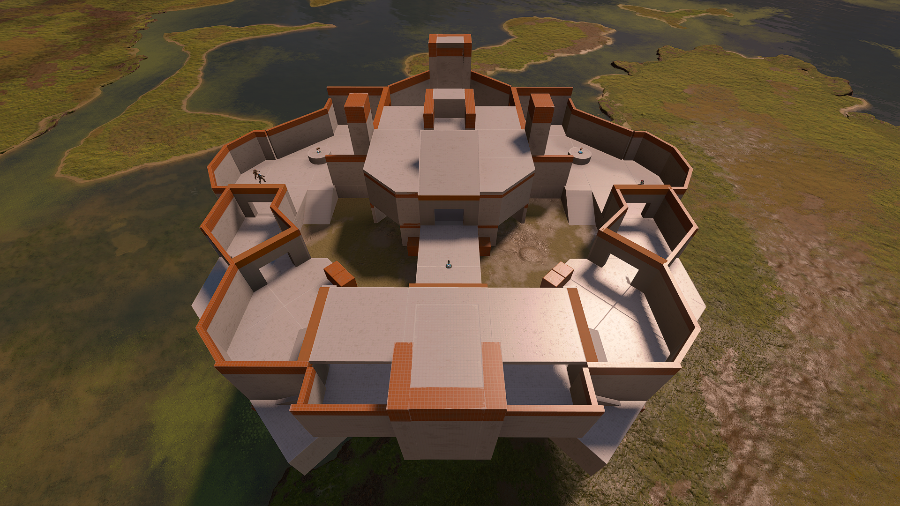
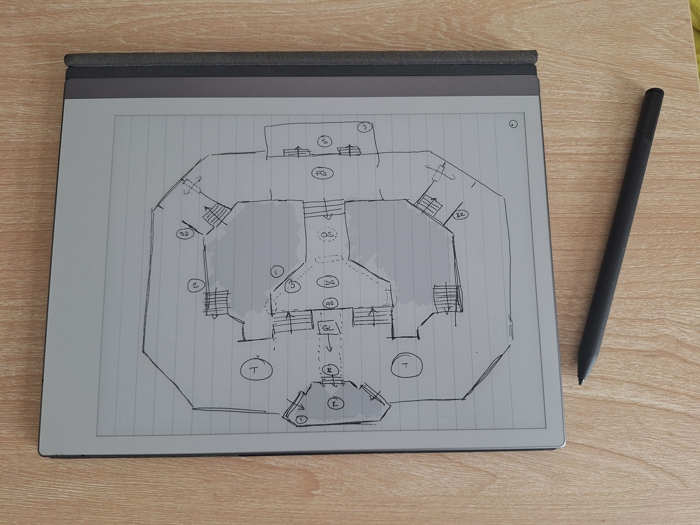
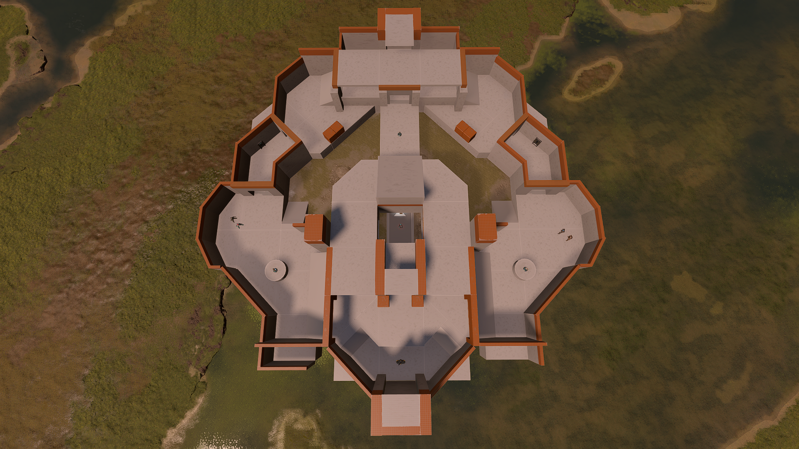
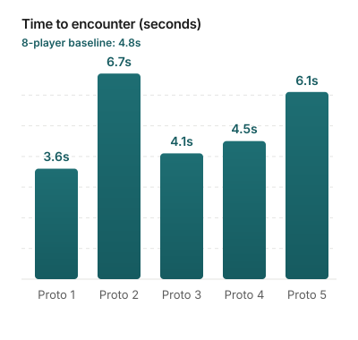
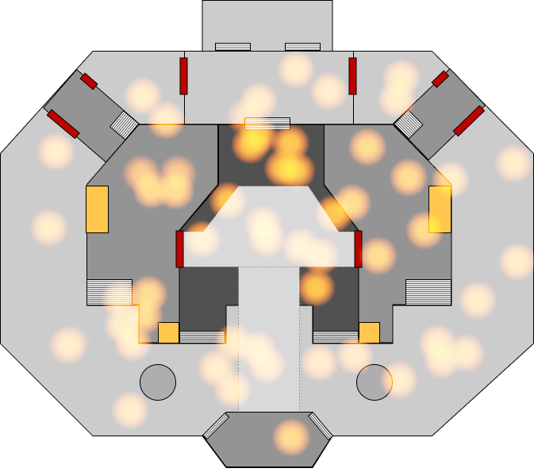
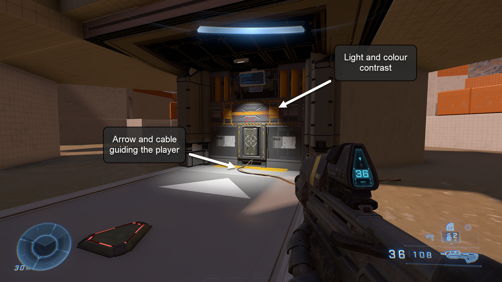
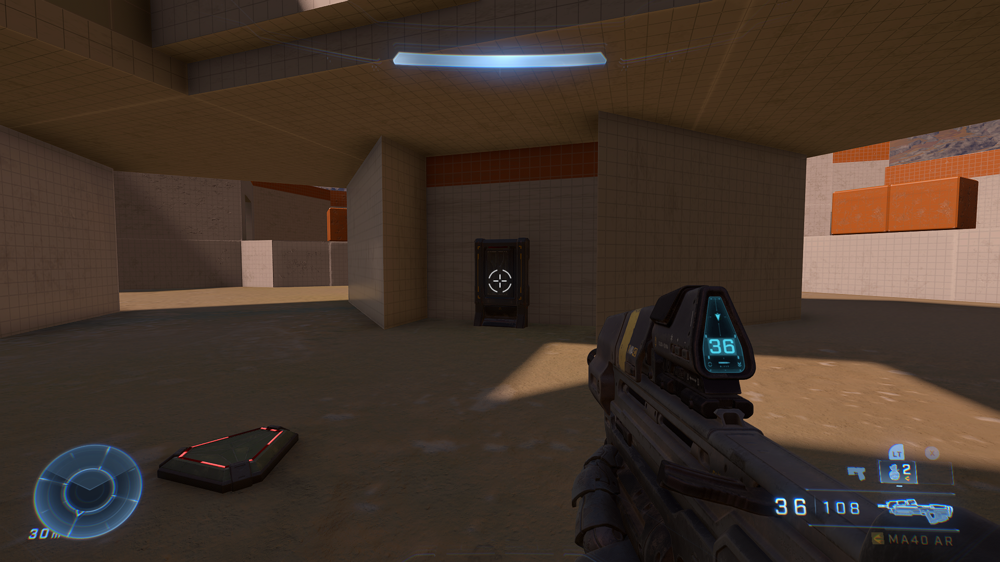

I designed a custom map to fix a pacing problem for our group. I thought I knew exactly what was wrong. The playtests told a different story.

The problem
Halo is a game where players battle in small arenas called maps. My group of four plays in-person on split-screen, but the maps that come with the game are built for eight players. Our matches felt slow and unsatisfying.
I measured time-to-encounter and match length against an eight-player baseline. Both roughly doubled in our four-player sessions.
"I can't find anyone." Player, during 4-player session
"I don't know where I'm going." Player, during 4-player session
The process
I researched popular Halo maps to understand what made them work, then sketched five designs, wireframed them in Figma, and built low-fidelity prototypes in Forge.
I playtested each prototype with AI bots, measuring time-to-encounter against the baseline. I also built a web app that visualised player death locations as a heatmap overlaid on the wireframes.

Paper sketch of a design concept

Low-fidelity prototype in Forge

Time-to-encounter across five designs

Heatmap showing good map coverage
The surprise
I playtested the winning design with my group, expecting feedback on navigation. Instead, two unexpected themes emerged: weapon familiarity and visual noise. Players didn't recognise newer weapons, causing confusion mid-fight. And the map was hard to read at a glance because key routes weren't visually distinct enough.
"How does this weapon work?" Player, during playtest
"I can't tell where to go." Player, during playtest
These findings directly shaped two changes to the final design:
Visual hierarchy — I used lighting and colour contrast as navigational cues, guiding players toward key routes.
Sandbox clarity — I swapped unfamiliar weapons for classic equivalents players would recognise immediately.

After
BeforeDrag to compare before and after
Outcome
5.8s
Time to encounter
Down from 9.5s · Target: 4.8s
156s
Match time
Down from 318s · Target: 150s
"This map is much better than the others we've played. It was far easier to find players, and know where to go." Player, after final playtest
"The map was pretty easy to learn after one session." Player, after final playtest
The real lesson
I knew the weapons and designed the map looking at a full screen. My users were playing on a quarter of the screen with weapons they weren't familiar with.
The data and the prototypes got me close to a good design.
But the real problems only appeared when real users touched it.
The only thing that surfaced these gaps was putting the map in front of people who weren't me.